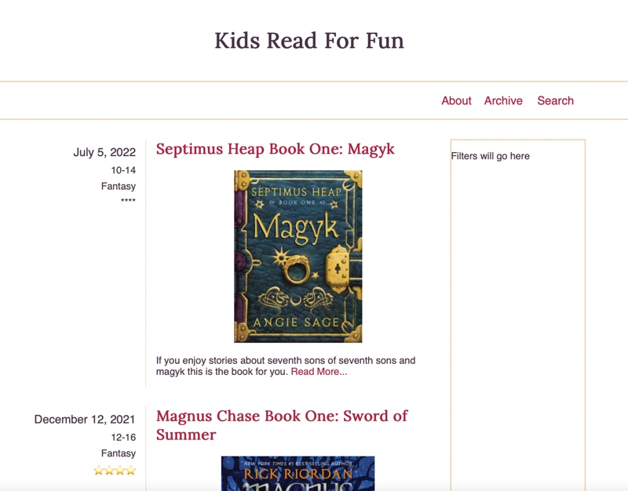

This week we will take the simple blog site that you started
developing last week and finish the styling for it so that it matches
the mockup. We will also then make the page somewhat dynamic by
generating some of the markup for the page with Javascript.
Finish styling the articles.
The main part of the page that we have yet to style is the
article. We began last week by adding a grid to accomplish some of
the layout.
Review once again the mockup below then make a list of steps that
you can see need to be done to make our page match the mockup.
Once you have created your list compare it to the one below.

MockupArticle List of steps
The size of the font for the date of the article should be
increased
The list of details on the left should all be right aligned.
The space between the lines of the list of details on the left
should be slightly reduced.
Add a right border to the container holding the list of
details and add spacing on the left and right of that to match
the mockup.
Adjust the top margin of the title of the post so that it
lines up vertically with the date on the left.
Center the image of the bookcover.
Add some space in between the two articles
Since we restricted the width on the navbar last week (review
that CSS rule if you need to) we should do the same to the
main element as well so that it matches and we
end up with nice alignment.
How did you do? Did you notice all of the details?
Using the list above as a guide, write the CSS to style the
articles.
Add some Javascript
If this were a real blog site it would be nice if we didn't have
to change the index page each time we added a new post. Many sites
operate in this way. In order to do this we need to dynamically
generate the HTML markup for the articles instead of having it be
hard coded in the HTML file.
Last week you were instructed to download a
articles.js file and add it to the
blog/ directory. That file contains a variable called
articles that contains an array of information about
articles. We can use that array to build out the HTML markup we
need to dynamically build the list of articles on our page.
On a real site the articles data would be pulled stored in a
database and requested as needed. In order to keep ours simple we
will just store it in a variable locally.
To proceed, connect your new JS file to the
index.html file in that directory by adding a
script element. Don't forget to defer!
Just like we did above with the CSS, it would be good to come up
with a list of steps to follow in order to solve our problem.
Get a reference to the element we want to insert our articles
into. You may need to add a class or ID to the element your
articles are currently in to do this. (document.querySelector)
For each article in our list:
Create a new article element. If you have any
classes on your hard coded articles in your index.html, add
those to your new element in Javascript.
Create a template literal string and store it in a variable.
The contents of this string should be a copy/paste of the
contents of one of your current articles from
the HTML file.
Everywhere in the copy/pasted HTML where there is
information specific to this post we should replace it with
the data from the current article. (${item.date})
Set the innerHTML of the new article to the
template literal string we just built.
Append the new article to the output element so it will show
on the page.
Create one or more functions that will be responsible to build and
output the HTML necessary to display the list of articles.
The articles variable you were given is an array of
objects. We will learn more next week about creating objects,
but we have already been using them without knowing. For example
the document we reference when we do something like
document.querySelector() is an object that has
properties, and methods (functions) that
belong to it. when we want to reference a certain part of the
object we use the dot operator.
So if we wanted to use the title of the first object in our
variables array we would write
articles[0].title. We can use a loop such as the
Array.forEach loop we studied this week to make it
easy to access each object in the array one at a time no matter
how many items there are in the array.
Cleanup/Add a new post.
Once you have the Javascript working and it is adding the articles
dynamically you might notice that you have two copies of each
article on your page. Go into the index.html file and
remove the HTML that produces the articles. We don't need it
anymore.
For fun let's see how easy it would be to add an new article. In
the articles.js file copy one of the objects that
contains the information about our books. Paste it below the last
item in the array (don't forget to add a comma). Then you can
change the title to one of your favorite books. Change the other
items if you want. It would look something like below:
const articles = [
{
id: 1,
title: "Septimus Heap Book One: Magyk",
date: "July 5, 2022",
description:
"If you enjoy stories about seventh sons of seventh sons and magyk this is the book for you.",
imgSrc: "https://upload.wikimedia.org/wikipedia/en/5/5f/Magkycover2.jpg",
imgAlt: "Book cover for Septimus Heap 1",
ages: "10-14",
genre: "Fantasy",
stars: "****"
},
{
id: 2,
title: "Magnus Chase Book One: Sword of Summer",
date: "December 12, 2021",
description:
"The anticipated new novel by Rick Riordan. After Greek mythology (Percy Jackson), Greek/Roman (Heroes of Olympus), and Egyptian (Kane Chronicles), Rick decides to try his hand with Norse Mythology, and the end result is good.",
imgSrc:
"https://books.google.com/books/content/images/frontcover/xWuyBAAAQBAJ?fife=w300",
imgAlt: "Book cover for Magnus Chase 1",
ages: "12-16",
genre: "Fantasy",
stars: "⭐⭐⭐⭐"
},
{
id: 3,
title: "Belgariad Book One: Pawn of Prophecy",
date: "Feb 12, 2022",
description:
"A fierce dispute among the Gods and the theft of a powerful Orb leaves the World divided into five kingdoms. Young Garion, with his "Aunt Pol" and an elderly man calling himself Wolf --a father and daughter granted near-immortality by one of the Gods -- set out on a complex mission.",
imgSrc:
"https://images-na.ssl-images-amazon.com/images/I/41ZxXA+nInL.jpg",
imgAlt: "Book cover for Pawn of Prophecy",
ages: "12-16",
genre: "Fantasy",
stars: "⭐⭐⭐⭐⭐"
}
];
Save the file and look at your page. You should now have three
articles listed!
Commit and push your work.
Commit your changes, then push them to GitHub. Wait a few minutes
then check to make sure they show on Github pages. If you need a
review on how to do this check out
github instructions. Start around step 3.
After verifying that your page updated, submit the URL to your
page in Ilearn. The URL will look something like this:
https://githubusername.github.io/wdd130/. Make sure to
replace "githubusername" with YOUR actual github username :)